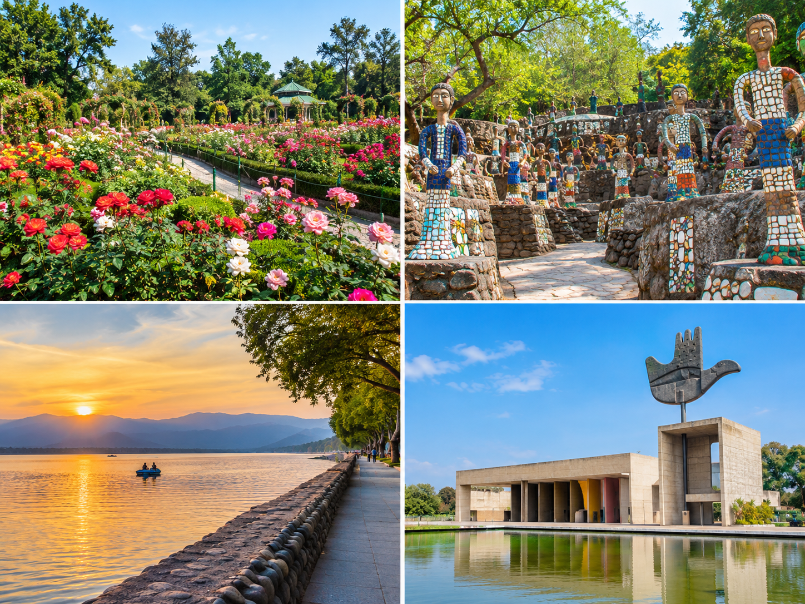

Our Tour Packages
Explore Beautiful Destinations with Shiv Shakti Travels
Discover amazing places, enjoy scenic views, and create unforgettable travel memories with your family and friends.
1. Shimla Tour

Shimla is a beautiful hill station in Himachal Pradesh, famous for its pleasant weather, green mountains, and scenic views. It is an excellent destination for families, couples, and nature lovers.
Places to Visit
- Mall Road: Enjoy shopping, local cafés, and a relaxing walk.
- The Ridge: Experience beautiful mountain views and explore a famous open area.
- Kufri: Discover scenic landscapes and seasonal outdoor activities.
- Jakhu Temple: Visit a well-known temple located on Jakhu Hill.
Suggested Duration: 2 Days
Ideal For: Families, couples, and weekend travellers
Best Time to Visit: March to June for pleasant weather; winter for a chance to experience snowfall.
Suggested Itinerary
| Day |
Activities |
| Day 1 |
Explore Mall Road, The Ridge, and nearby attractions. |
| Day 2 |
Visit Kufri and Jakhu Temple, depending on time and weather. |
2. Manali Tour

Manali is a popular mountain destination known for its beautiful valleys, snow-covered peaks, adventure activities, and peaceful surroundings. It is a wonderful place for holidays with family and friends.
Places to Visit
- Hadimba Temple: Explore a famous wooden temple surrounded by cedar forests.
- Solang Valley: Enjoy mountain scenery and seasonal adventure activities.
- Old Manali: Discover cafés, local culture, and beautiful surroundings.
- Mall Road: Shop for souvenirs and enjoy local food.
- Vashisht: Visit the village known for its temple and hot springs.
Suggested Duration: 3 Days
Ideal For: Families, friends, couples, and nature lovers
Best Time to Visit: March to June for pleasant weather; winter for snow experiences, subject to conditions.
Suggested Itinerary
| Day |
Activities |
| Day 1 |
Explore Hadimba Temple, Mall Road, and nearby attractions. |
| Day 2 |
Visit Solang Valley and enjoy suitable seasonal activities. |
| Day 3 |
Explore Old Manali and Vashisht before departure. |
3. Chandigarh Tour

Chandigarh is a well-planned city known for its gardens, modern architecture, clean surroundings, and popular tourist attractions. It is suitable for a relaxing day trip with family and friends.
Places to Visit
- Sukhna Lake: Enjoy peaceful views and a relaxing walk near the lake.
- Rock Garden: Explore creative sculptures made from recycled materials.
- Rose Garden: Enjoy greenery and seasonal flowers.
- Sector 17 Plaza: Explore shopping areas, restaurants, and city life.
- Government Museum and Art Gallery: Discover art and cultural exhibits.
Suggested Duration: 1 Day
Ideal For: Families, students, and sightseeing visitors
Best Time to Visit: October to March is generally comfortable for sightseeing.
Suggested Itinerary
| Time |
Activities |
| Morning |
Visit Rock Garden and Sukhna Lake. |
| Afternoon |
Explore the Rose Garden and nearby attractions. |
| Evening |
Enjoy shopping and dining around Sector 17 Plaza. |
4. Dharamshala Tour


Dharamshala is a scenic destination in Himachal Pradesh known for mountain views, Tibetan culture, peaceful monasteries, and the beautiful surroundings of McLeod Ganj.
Places to Visit
- Dalai Lama Temple: Experience the peaceful atmosphere of an important Buddhist spiritual centre.
- McLeod Ganj: Explore local markets, cafés, and Tibetan culture.
- Dal Lake: Enjoy the natural surroundings near the town.
- Bhagsunath Temple: Visit a popular local temple near Bhagsu.
- Cricket Stadium: Admire the mountain views around the famous stadium.
Suggested Duration: 2 Days
Ideal For: Families, nature lovers, and cultural travellers
Best Time to Visit: March to June and September to November are popular periods for sightseeing.
5. Dalhousie Tour

Dalhousie is a peaceful hill station surrounded by pine forests, green valleys, and beautiful mountain scenery. It is an excellent destination for relaxing holidays and nature photography.
Places to Visit
- Khajjiar: Explore a scenic meadow surrounded by forests and mountain views.
- Dainkund Peak: Enjoy panoramic views on a suitable visit.
- Panchpula: Discover a popular local picnic spot.
- Kalatop: Explore forest scenery and nature trails where accessible.
- Churches of Dalhousie: See historic churches and colonial-era architecture.
Suggested Duration: 2 Days
Ideal For: Families, couples, and nature lovers
Best Time to Visit: March to June for pleasant weather and autumn for scenic views.
6. Amritsar Tour

Amritsar is a historic city in Punjab, famous for its spiritual heritage, delicious food, and important historical landmarks. It is a wonderful destination for cultural and family trips.
Places to Visit
- Golden Temple: Visit the famous Sikh spiritual shrine and experience its peaceful atmosphere.
- Jallianwala Bagh: Learn about an important event in Indian history.
- Durgiana Temple: Visit a well-known Hindu temple.
- Wagah Border: Experience the border ceremony, subject to the schedule and access rules.
- Local Markets: Explore Punjabi food, traditional clothing, and local products.
Suggested Duration: 1–2 Days
Ideal For: Families, history lovers, and cultural travellers
Best Time to Visit: October to March is generally comfortable for sightseeing.
Want to Plan Your Tour?
Contact Shiv Shakti Travels to discuss your destination, travel dates, transportation needs, and tour arrangements.
Phone: 98772-73173 / 78379-74613 / 81463-29949
Office: 137, Near State Bank of Patiala, V.P.O. Dariya, Near Railway Station, Chandigarh - 160101.
Make a Booking Enquiry